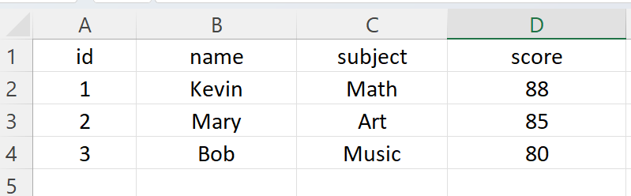
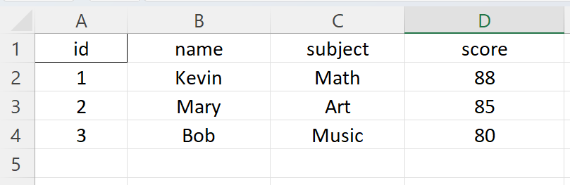
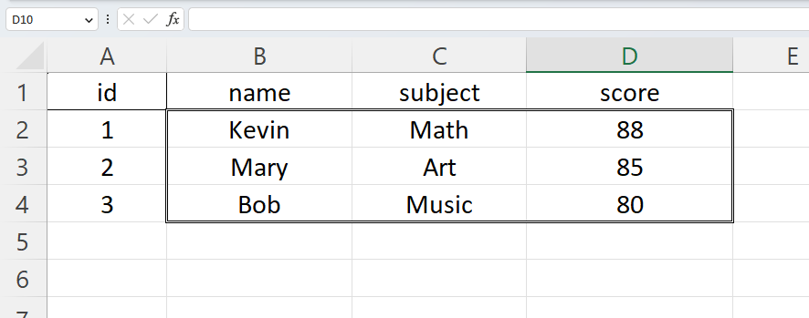

How to Set Cell Border Style in Python
Table of Contents
Introduction
Hello Python aficionados! Are you prepared to advance your knowledge of Excel automation? This post will go in-depth on how to establish cell border styles in Python using the robust OpenPyXL module. Applying border styles will give your spreadsheets that polished look with just a few lines of code. So let’s dive right in and begin our exploration!
By Ricardo Gomez Angel on Unsplash

Setting Border Style for a Single Cell
In this example, we’ll learn how to apply a border style to a single cell in an Excel workbook. First, ensure you have OpenPyXL installed by running the following command:
pip install openpyxl
Suppose we already have an Excel file named test.xlsx under data folder. We will firstly open it and change the border style for the cell A1.
import openpyxl
from openpyxl.styles import Border, Side
# Open an existing workbook
wb = openpyxl.load_workbook('data/test.xlsx')
sheet = wb.active
# Access the cell you want to apply the border style to
cell = sheet['A1']
# Create a Side object with the desired border style
thin_border = Side(border_style='thin', color='000000')
# Create a Border object and apply the border style to all sides
border = Border(left=thin_border, right=thin_border, top=thin_border, bottom=thin_border)
# Apply the border style to the cell
cell.border = border
# Save the workbook
wb.save('data/test.xlsx')
Before:

After:

Applying Border Style to a Range of Cells
We can also set border style for a range of cells by looping the rows and columns.
import openpyxl
from openpyxl.styles import Border, Side
# Open an existing workbook
wb = openpyxl.load_workbook('data/test.xlsx')
sheet = wb.active
# Create a Side object with the desired border style
double_border = Side(border_style='double', color='000000')
# Loop through the range of cells and apply the border style
for row in range(2, 5):
for col in range(2, 5):
cell = sheet.cell(row=row, column=col)
# Adjust the border style based on the cell's position within the range
if row == 2:
top = double_border
else:
top = Side(border_style=None)
if row == 4:
bottom = double_border
else:
bottom = Side(border_style=None)
if col == 2:
left = double_border
else:
left = Side(border_style=None)
if col == 4:
right = double_border
else:
right = Side(border_style=None)
# Create a Border object with the adjusted border style
border = Border(left=left, right=right, top=top, bottom=bottom)
# Apply the border style to the cell
cell.border = border
# Save the workbook
wb.save('data/test.xlsx')
Before:
After:
